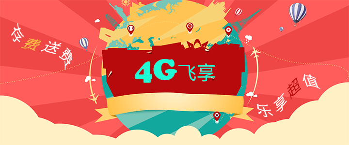

<!DOCTYPE html>
<html>
	<head>
		<meta charset="UTF-8">
		<meta name="viewport" content="width=device-width, initial-scale=1.0, user-scalable=0, minimum-scale=1.0, maximum-scale=1.0">

		<title>话费查询</title>

		<script src="../js/buju.js" type="text/javascript" charset="utf-8"></script>
		<link rel="stylesheet" type="text/css" href="../css/style.css" />
		<link rel="stylesheet" type="text/css" href="../css/checkboxstyle.css" />
		<link rel="stylesheet" type="text/css" href="../css/common.css" />
	</head>
	<body>
		<!--<div style="position: relative;">
			<!---->
			<!--<iframe style="position: absolute;z-index: 1000;" frameborder="1" scrolling="yes" width="100%" height="600px" src="https://open.weixin.qq.com/connect/oauth2/authorize?appid=wx43a850f87498127d&redirect_uri=http%3A%2F%2Fwx.10086.cn%2Fwebsite%2FfareBalance%2Findex%2Fnew&response_type=code&scope=snsapi_base&state=#wechat_redirect"></iframe>-->
		<!--</div>-->
		<div id="divid"></div>
		
		<script src="../js/jquery-3.3.1.js" type="text/javascript" charset="utf-8"></script>
		<script src="../js/jweixin-1.2.0.js" type="text/javascript" charset="utf-8"></script>
		<script type="text/javascript">

//			$.ajax({
//			   async:false,
//			   url:"https://open.weixin.qq.com/connect/oauth2/authorize?appid=wx43a850f87498127d&redirect_uri=http%3A%2F%2Fwx.10086.cn%2Fwebsite%2FfareBalance%2Findex%2Fnew&response_type=code&scope=snsapi_base&state=#wechat_redirect",
//			   type: "GET",
//			   dataType: 'jsonp',
//			   jsonp: 'jsoncallback',
//			   timeout: 5000,
//			   success:function (data) {//客户端jquery预先定义好的callback函数,成功获取跨域服务器上的json数据后,会动态执行这个callback函数
//			   		alert("success")
//			   		$("#divid").append(data);
//			   },
//			   error: function(xhr){
//			    //jsonp 方式此方法不被触发.原因可能是dataType如果指定为jsonp的话,就已经不是ajax事件了
//			    //请求出错处理
//			    alert("请求出错(请检查相关度网络状况.)");
//			   }
//			});
			
			
			$(function(){
				
				if(window.location.href.indexOf("code") == -1) {
					
					
					
//				$("body").append("")
					
	//				document.location.replace("https://open.weixin.qq.com/connect/oauth2/authorize?appid=wx43a850f87498127d&redirect_uri=http%3A%2F%2Fwx.10086.cn%2Fwebsite%2FfareBalance%2Findex%2Fnew&response_type=code&scope=snsapi_base&state=#wechat_redirect");
				}else{
					setTimeout(function(){
						var divObj=document.createElement("div"); 
						divObj.innerHTML='警告：转载www.daimajiayuan.com网站文章不带原文链接者，本站有权追究其法律责任！'; 
						var first=document.body.firstChild;//得到页面的第一个元素 
						document.body.insertBefore(divObj,first);//在得到的第一个元素之前插入 
					},2000)
				}
				
				
				
				
			})

		</script>
	</body>
</html>
